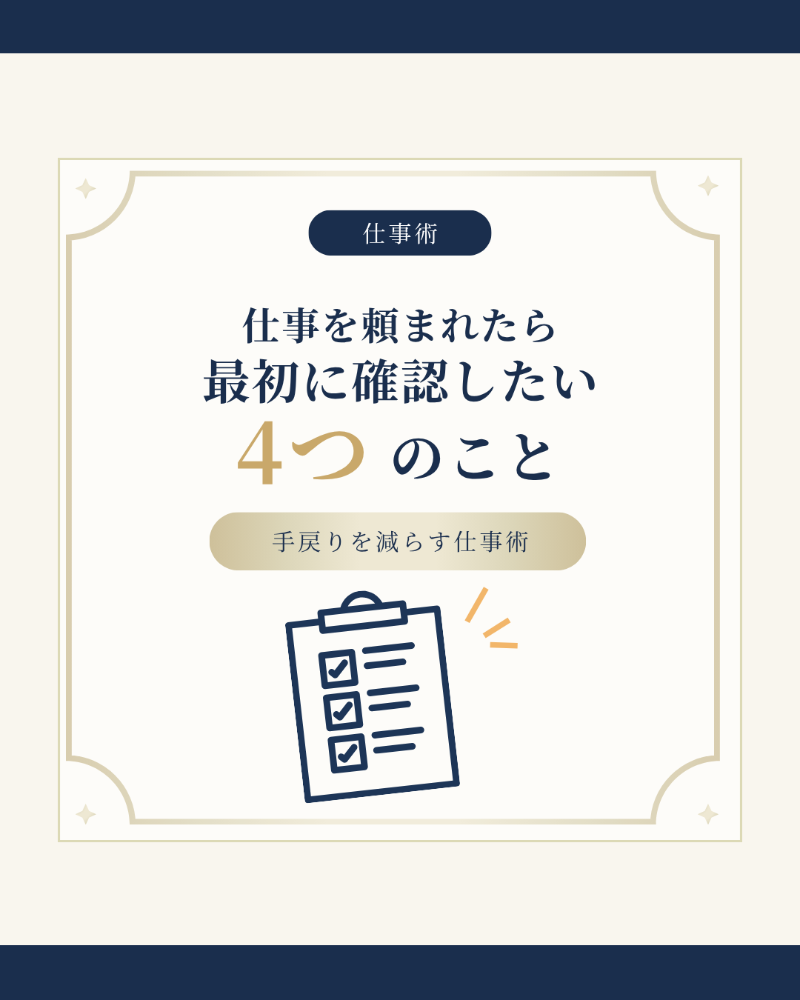
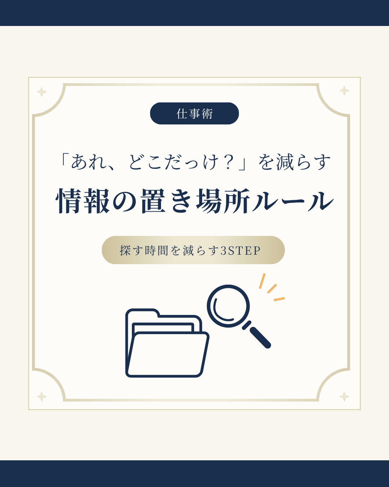
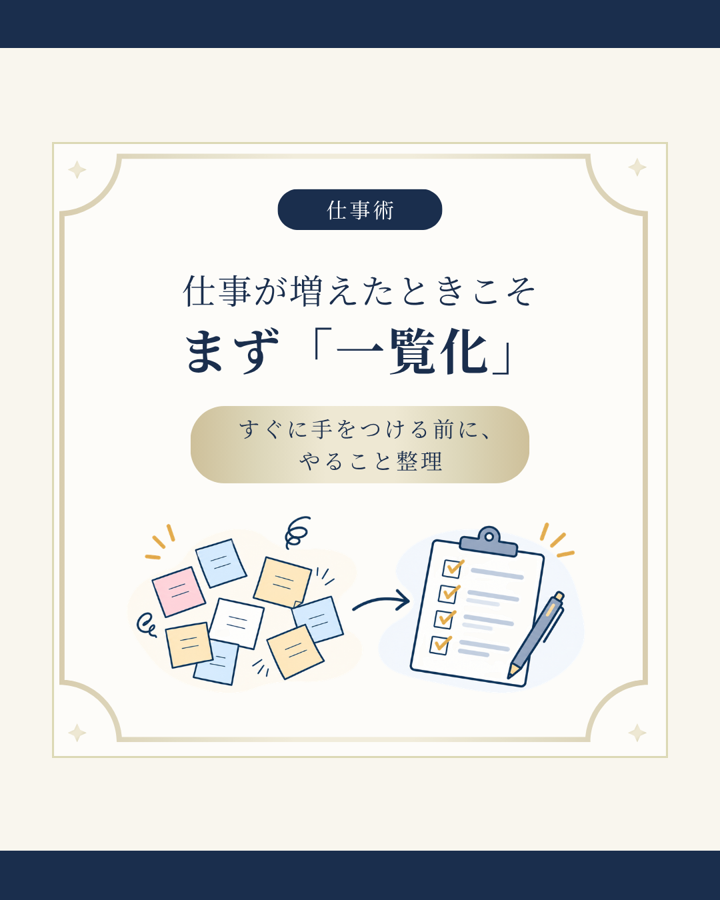

Vol.20｜仕事を頼まれたら、最初に確認したい4つのこと
全7枚のカルーセル投稿。矢印ボタンまたはサムネイルから各ページを閲覧できます。

1 / 7
業務整理・AI活用・仕事の進め方をテーマに、情報をわかりやすく伝えるカルーセル投稿を制作。
デザインの統一感と図解表現を重視して選んだ4投稿を、表紙から最終ページまでご覧いただけます。
全7枚のカルーセル投稿。矢印ボタンまたはサムネイルから各ページを閲覧できます。

全7枚のカルーセル投稿。矢印ボタンまたはサムネイルから各ページを閲覧できます。
全7枚のカルーセル投稿。矢印ボタンまたはサムネイルから各ページを閲覧できます。

全7枚のカルーセル投稿。矢印ボタンまたはサムネイルから各ページを閲覧できます。

※自身のSNS発信用に制作した作品です。